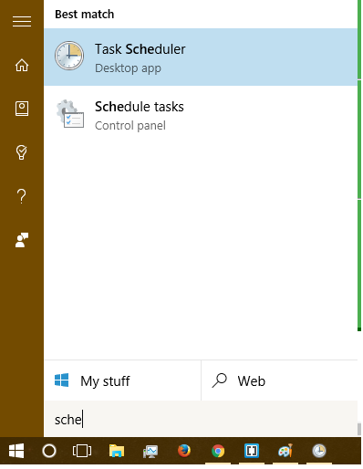
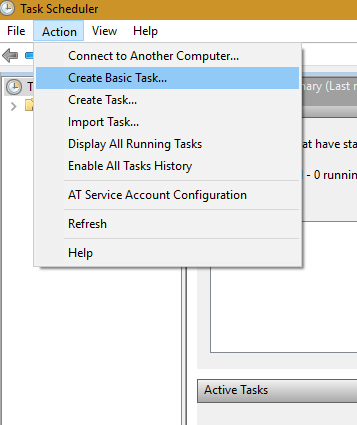
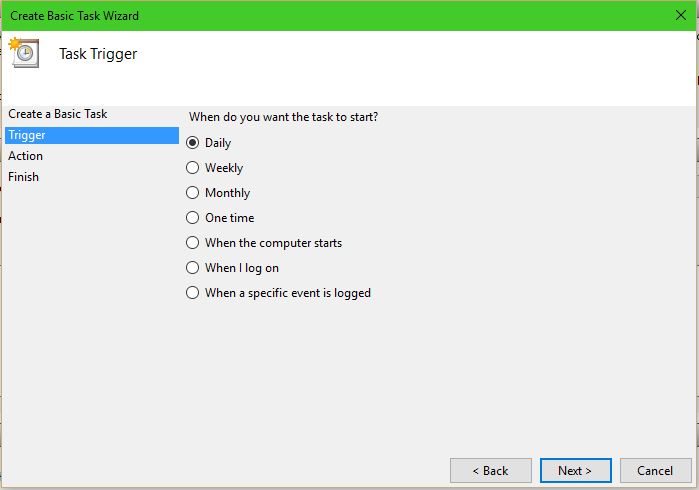
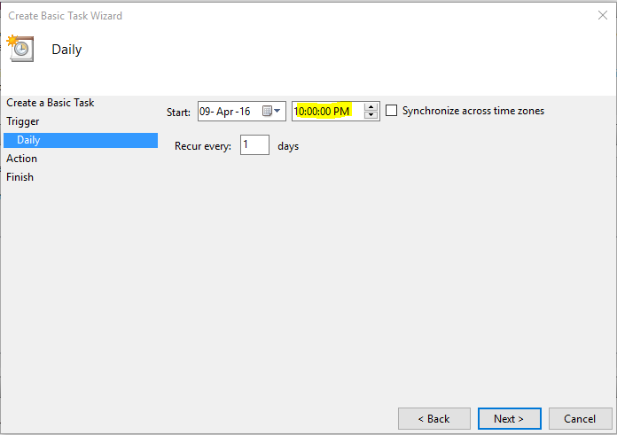
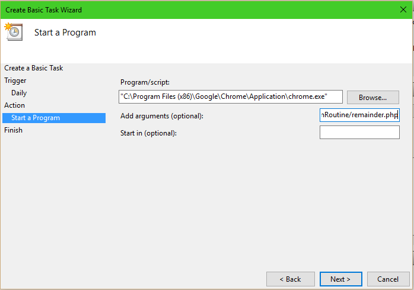

1. Run Task Scheduler

2. Create Basic Task From Action Menu

4. Give a name and optional description and click next

4. Trigger to start daily click next
5. Select a time to run and no need to change any other things, next.

6. Next again
7. Give location for your web browser. Ex. for chrome it's: "C:\Program Files (x86)\Google\Chrome\Application\chrome.exe". Add argument: http://localhost/ExamRoutine/remainder.php hit next.

8. Click finish.